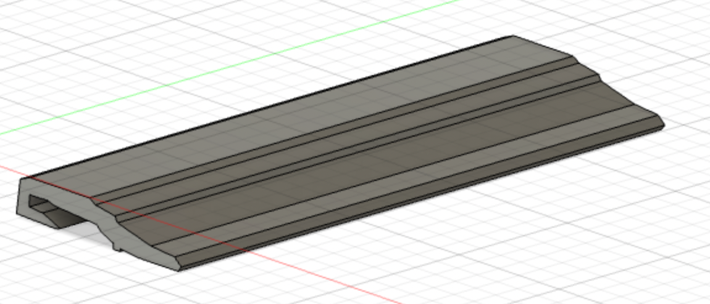
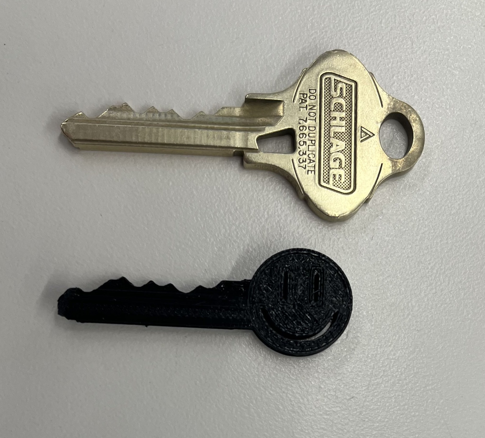

# preface
# ---------------------------------
continuing the theme of locks/opening doors, i decided to make a 3d model/3d print of
the key to my dorm room for this week's assignment.
i thought this would be a good candidate for this
week's assignment because it contains three-dimensional
inner grooves that are both intricate and that curve in on each other — making
it difficult to reproduce by laser cutting or milling.
# creating the 3d model
# ---------------------------------
because of the importance of accurate measurements of the key's dimensions,
i decided to upload an image of the key as a canvas on fusion 360, and then
create my sketch based on that canvas.

i also took a picture of the key's side view to use as a perpendicular canvas.
using this lateral view, i first created a sketch of the side profile of the key
i then extruded this to form the shaft of the key

then, using the other canvas of the top view of the key, i created another sketch outlining the key's teeth.
then, using the "intersect" setting of the "extrude" function, i extruded this sketch
to form a body that consisted of the intersection between these two sketches.
lastly, there were two additional notches on the other side of the key
that weren't accounted for in this draft:
as such, i had to flip the model over, and create a sketch of the indentation. then, using the "cut" setting of the "extrude"
function, i was able to remove these two notches from the model.
# printing the key
# ---------------------------------
having completed a preliminary model, i then exported it as a .stl file, prepared
the 3d print in prusaslicer using the DRAFT settings, and printed.
unfortunately, this version was much thinner than my actual key. i'm not sure why this happened; i assume
it was because i measured incorrectly or calibrated the canvas incorrectly. so, i re-measured the dimensions
and did another, more accurate 3d model, which i then printed using black filament
here, you can see a comparison of the thicknesses of my first version (blue), my second version (black), and my actual key:
and here's a comparison of it and my original key

unfortunately, it did not successfuly unlock the door. i think this is a combination of
the measurement inaccuracies in my original 3d model as well as the inexactness of the 3d printing.
perhaps for a future iteration, i will refind the 3d model and print on a more detailed nozzle setting.
Here is my final .3mf file, and here is my final .gcode file.